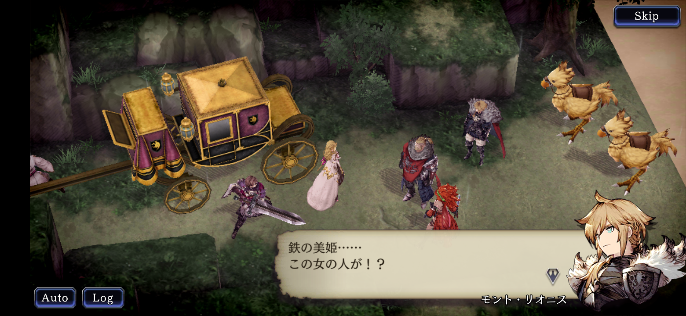
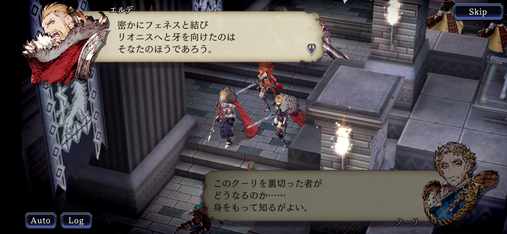
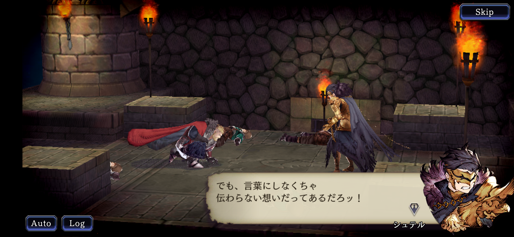
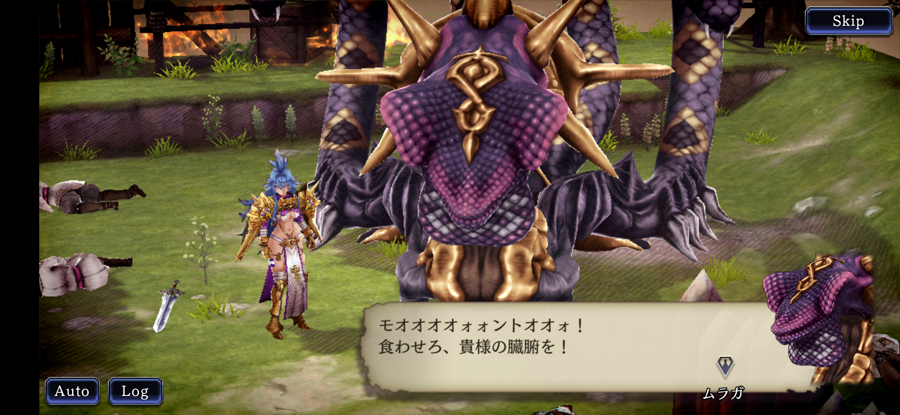
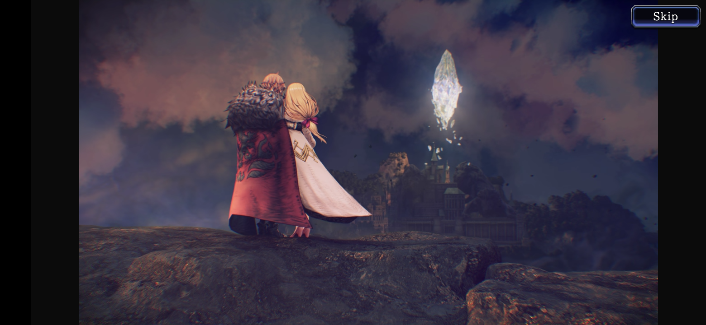

あらすじ
小国リオニスは翼持つ者ギルガメッシュから授かった指輪の力で列強国からも一目置かれていた。指輪は英霊のビジョン(幻影)を召喚して使役する力を持っていた。そのリオニスの国境付近でホルンの姫マシュリーは賊に襲われる。それは同盟国フェネスの王ムラガに嫁ぐ参進の儀の途中であった。それを助けに来たモントとマシュリーは時間を共にするにつれて互いに惹かれていくのであった。フェネスの王ムラガはマシュリーが敵国であるリオニスにいることを知ると、リオニスに攻め入るのであった。
| 各章 | 要約 |
|---|---|
| 1章～2章 | エルデとモントはマシュリーを襲った賊と戦う。フェネスがリオニスに攻め入る。 |
| 3章～5章 | リオニス王エルデとモントはウェズエットを頼り、フェネス軍から逃げる。リオニス城に残されたシュテルは父を憎み祖国を捨てる。 |
| 6章～9章 | モントらを追いかけてきてウェズエット領付近に砦を築くフェネスとの戦い。グラセラによるウェズエット内での叛乱計画が進行する。ホルンはフェネスとの同盟関係を解消する。 |
| 10章～13章 | 捕らわれたマシュリー救出のためリオニスとホルンは手を結び、戦場はリオニス領へと移る。フェネスの王ムラガとの決戦。 |
| インタールード | フェネスの残党のその後と、リオニスとホルンの同盟によるウェズエットとの戦の準備が描かれる。 |
モントとマシュリーの出会い（第1章）
リオニスの国境付近で賊に襲われていること聞き、モントと父王エルデが駆けつけマシュリーと出会います。
頼った同盟国ウェズエットに裏切られる（第9章）
一時はウェズエットに身を寄せるも同盟は維持できないと見て、離れる一行。
エルデとシュテル（第11章）
父を憎みリオニスを捨てたシュテルは最後までエルデの思いを知らぬまま殺めてしまう。第二部にて廃墟となったリオニス城で日記を読みエルデの真意を知ることになる。
怪物と化したフェネスの王ムラガと戦う（第13章）
フェネスの王ムラガは魔晶獣と呼ばれる化物になってしまった。犠牲者を出してしまったが辛くも倒す。
リオニスの上空に巨大なクリスタルが出現（第一部エンディング）
フェネスとの戦いがひと段落すると、リオニス城の地下から謎の巨大なクリスタルが現れた。サーダリーはそれを光の繭と形容した。
